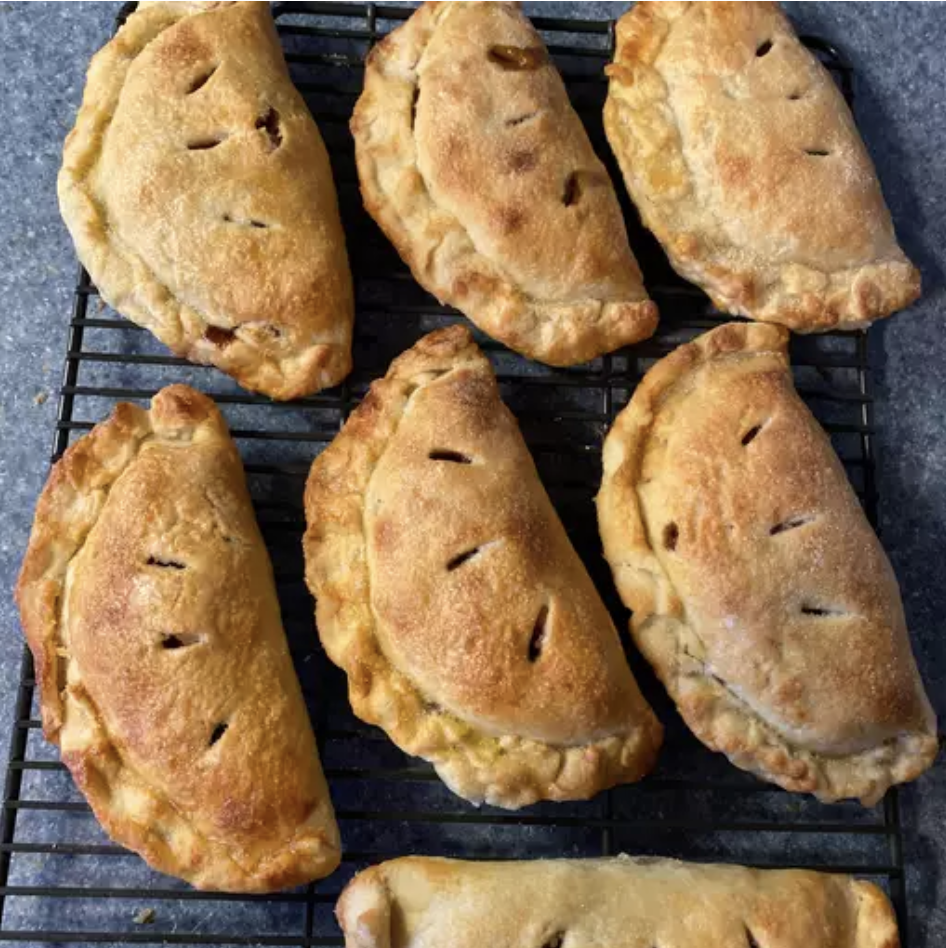

Apple Hand Pies

Indulge in the allure of these exquisite apple hand pies, also lovingly referred to as apple turnovers, which boast a visual appeal that rivals even the finest bakery creations. The versatility of this recipe shines through, as it welcomes an array of beloved pie fillings, ranging from sweet to savory, making it a culinary canvas for your creativity. To elevate the experience, savor these delectable hand pies while they're still warm, ideally paired with a scoop of creamy vanilla ice cream, creating a symphony of flavors and temperatures. With a total preparation time of just about an hour, you'll have four of these delectable pies ready to sate your cravings, whether it's a cozy family dinner or an intimate gathering with friends. These apple hand pies redefine homemade desserts with their impeccable presentation and mouthwatering taste, proving that you don't need a patisserie to enjoy the finer things in life.
Ingredients
- 2 tablespoons butter
- 2 large green apples - peeled, cored, and cut into chunks
- 2 tablespoons brown sugar
- ¼ cup white sugar
- ¼ teaspoon salt
- 1 ½ teaspoons ground cinnamon, or to taste
- 1 teaspoon water, or more if needed (Optional)
- 1 pound prepared pie dough, cut into 4 pieces
- 1 egg
- 2 teaspoons milk
- 1 teaspoon white sugar, or as needed
Steps
- Melt butter in a large skillet over medium heat; let butter brown to a light golden color and smell toasted, about 1 minute. Stir apples into hot butter; sprinkle with 1/4 cup white sugar, brown sugar, and salt. Cook and stir apple mixture until apples are softened, about 5 minutes. Mix in cinnamon and water; continue cooking until apples are soft and sticky, 1 to 2 more minutes. Spread apple filling onto a plate to cool.
- Preheat the oven to 400 degrees F (200 degrees C). Line a baking sheet with a silicone mat or parchment paper.
- Form a dough piece into a ball, place on a floured work surface, and roll into a circle about 8 inches in diameter.
- Spoon 1/3 to 1/2 cup apple filling in the center.
- Fold dough over filling, leaving about 1 inch of dough on the bottom side visible below the top side. Gently press dough closed around filling, using your fingertips.
- Fold the overhanging bottom part of dough up over the top edge, working your way around the crust, and pinch the overhang tightly to the top part of the crust.
- Crimp the edge tightly closed, pinching a little bit of dough with the thumb and forefinger of one hand and using your index finger on the other hand to push a small notch into the pinched dough. Continue pinching and notching all the way around until crust is tightly crimped together. Repeat with remaining dough and filling. Transfer pies onto prepared baking sheet.
- Whisk egg with milk in a small bowl until thoroughly combined. Brush top of each hand pie with egg mixture and sprinkle with about 1/4 teaspoon white sugar. Cut 3 small vent holes in the top of each pie.
- Bake in the preheated oven until pies are golden brown and filling is bubbling, 25 to 30 minutes. Let cool for at least 15 minutes before serving.